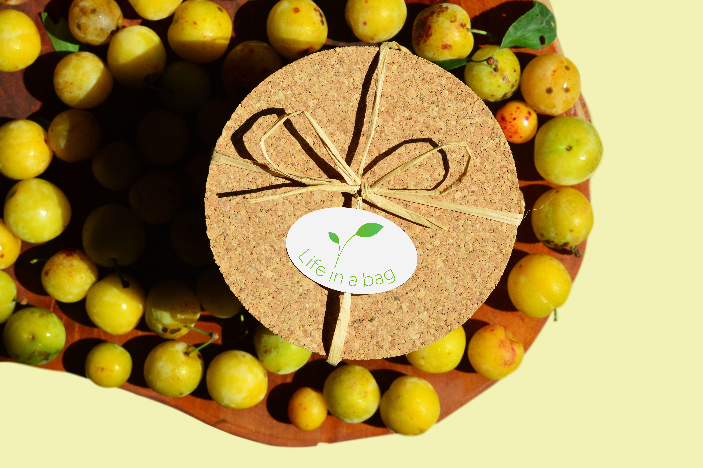

Life in a Bag
Branding

JUL 2020 · Personal project
Life in a Bag is a biologic products brand whose goal is to inspire and incentivize people to cultivate their own food at home.
Starting with the conceptualizing of the brand, the desire for something visually pleasing and modern with a concern for the environment conducted the designs.

Adopting the brand's iconic cork packaging, a new identification was created. With its message and purpose in mind, the created packaging designs work as a continuity of the identity.
A second packaging was designed along the same identity lines, although exploring a product differentiation.
The character of the illustrations provide an indispensable organic feel, contrasting with the used sans serif font.
Design by
Elisa Sampaio
Software
Adobe Illustrator
Mockups
Elisa Sampaio & freepik.com